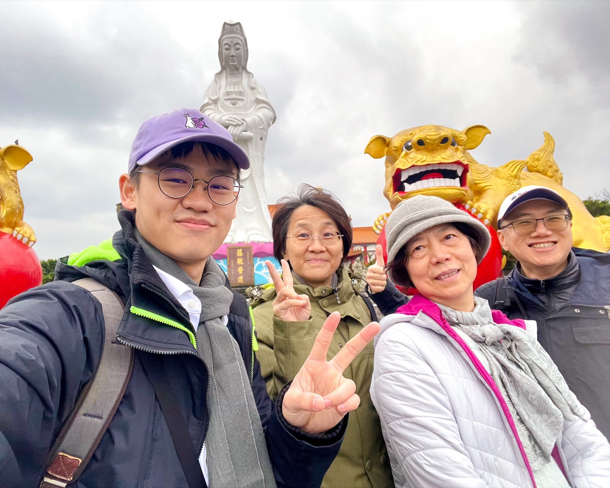

文字 · Text
默觀自我：「問題」與「答案」的弔詭思想行動
評許哲睿攝影作品《答案》——「問題」與「答案」的弔詭思想行動
如果仔細閱讀許哲睿攝影作品《答案》裡的「問題」與「答案」，反而會被困在所謂的「答案」裡，這些真的是「答案」嗎？我們透過「問題」與「答案」能得到真確（真正正確）的知識嗎？這些所謂的知識，真能帶給我們力量／權力嗎？還是會讓人愈看愈產生更多的困惑與疑問？抑或是讓人陷入學生時代死背標準答案的回憶？我們也許摸不著頭緒，許哲睿為何要藉由不同的學科（國文、英文、數學、歷史、地理、公民、物理、化學、生物、地球科學、國防等）的「問題」與「答案」到底想要傳達什麼意涵？影像中的人物刻意擺出不同的姿勢與手勢，是否在暗示我們什麼？
對於當前世代的臺灣學子，面對充滿實驗性的「現在進行式」課綱，應該默然接受規訓的標準答案？還是勇於提出反思？許哲睿選擇自創「思想國術」，擺出各種武術鍛鍊的「姿勢」（諧音「知識」），以「蹲馬步不解拳理，把身法蹲死」[1]，來嘲諷不求甚解背誦而得的知識，藉此探問究竟是「知識即是權力」（knowledge is power），還是有權力的人才能掌控知識的形成？關於知識與權力的辯證，法國思想家傅柯（Michel Foucault, 1926-1984）認為，知識的本質即是權力，因為權力無所不在，權力足以影響甚至控制他人的言行舉止，甚至指出社會宛如一個被監控的環形監獄，有權力者透過環視監獄的高塔，監控眾人服從社會的規範，而現代正是建構「思考非思的律法」[2]這個弔詭的思想行動，如此我們才有機會認識自我。但「我是誰？」這個答案，千古以來，總讓人瘋狂地探問，而傅柯預言，人會像海邊沙灘上的沙臉，終將被浪潮抹去。[3]
許哲睿以4ⅹ5黑白底片自拍《答案》系列肖像作品中，將當前臺灣教育界五花八門（如：三民主義、地震、核能、晶圓廠、高齡化、注音與諧音梗等歷屆考題）的「問題」刻寫在其前胸，「答案」卻刻意顯現在其後背，象徵「連自己都看不到的答案，又該如何向前走？」[4]同時傳達如果「學習的目的過於功利主義，導致求學囫圇吞棗應付考試，考完試即把知識（答案）拋在腦『後』，任由他人決定我們要學什麼，被他者強行『植入』思維或價值觀」[5]。亦有影像隱喻追求滿分一百分的考試國王，真能治理國家走往正確方向的標準道路嗎？考試國民儼然成了考試機器，必須遵循規訓答題，答得好者，被授予「說話的權利／權力」，相悖者則被淘汰報廢。對於長久以來考試制度提出反思的許哲睿說：「教育反映當權者思維，學校化身大型洗腦機構，考試則是比誰被洗腦得更徹底。」然而，事實上我們每個人對生活存有的各種價值判斷，並沒有正確的標準答案，「我們是誰？」、「應該是誰？」，不是誰可以制定標準的答案；學生學習的能力與成果，並不等於擁有真確的知識，人生的智慧知識需經由實際的生活體驗，而非僅是紙上（考試卷）談兵的武術操練而已。
藉由《答案》的影像創作，許哲睿試圖讓不同世代的社會群眾，回想自己求學階段曾經歷過大大小小的考試，得到所謂的「知識」至今是否還存在於腦海中？他經由自拍以自身試法，探究考試的功利制度使得有權力者，「透過暴力進行同化思想，塑造對『人』的信仰」，而「人」變得只為了考試「存活」。[6]有鑑於此，現代人應該追求「思考非思的律法」弔詭思想行動，才能進而真正認識自我，因為我存在才能思考，須將「自我問題化」。許哲睿將「問題與答案」刻寫在自身，透過「自我問題化」，提出考試制度「問題」與「答案」的弔詭，省思非思的弔詭行為，他勇於「說真話」的思想行動，正如傅柯在《傅柯說真話》書中，將人類「說真話」問題化，表明「說真話」不只是「說真話」，它還是一項社會行動，「說真話」的人，是一個敢冒風險的人，而未來「說真話」的哲學家，將是不停重新創造默觀自我的藝術家。
註釋
[1] 許哲睿創作自述。
[2] 參考楊凱麟，〈思考非思：傅柯的人學問題性〉，《國立政治大學哲學學報》（49期，2023年1月），頁25。
[3] 參閱原文« l’homme s’effacerait, comme à la limite de la mer un visage de sable. » Michel Foucault, Les mots et les choses : Une archéologie des sciences humaines, Paris : Gallimard,1966, p. 398.
[4] 參考許哲睿創作自述。
[5] 部分內容參考許哲睿創作自述。
[6] 部分內容引自許哲睿創作自述。

20240115合影於基隆中正公園（Zhongzheng Park, Keelung）